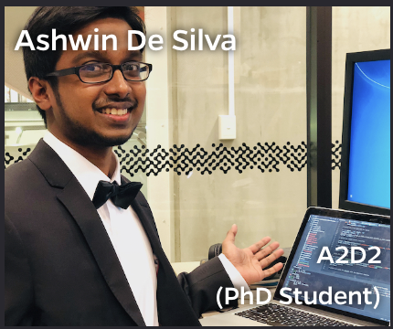

<div> <img src= "images/jhu.png" alt="jhu logo" align="right" width = "240" height= "125"> </div> <br> <br> <br> ##Towards a theory of out-of-distribution learning Jayanta Dey, Ali Geisa, Ronak Mehta, Tyler M. Tomita <br> PI: Joshua T. Vogelstein, [JHU](https://www.jhu.edu/) <center>  <br> </center> --- ## Questions to Answer - What is a learning task? - How can we generalize the idea of in-distribution learning to other out-of-distribution scenarios? - Is it enough to learn weakly? --- ## Decision Task - Data Space: $\mathcal{S} = \mathcal{X} \times \mathcal{Y}$ - Hypothesis: $\mathcal{H} \subseteq$ { $h \mid h: \mathcal{X} \to \mathcal{Y}$} - Distributions: $ (X,Y) \sim \mathcal{D}$ - Risk: - $R : \mathcal{H} \times \mathcal{D} \mapsto \mathbb{R}\_{\geq 0}$; - $\ell: \mathcal{Y} \times \mathcal{Y} \mapsto \mathbb{R}\_{\geq 0}$; - $R(h) = \mathbb{E}\_{(X, Y) \sim D}[\ell(h(X), Y)]$ ### .w[Definition:] $$\min\_{h \in \mathcal{H}} R(h)$$ --- ## PAC In-Distribution Learning - Data Space: $s\_n \in \mathcal{S}$ where $\mathcal{S} = $ {$s\_n \mid n \in \mathbb{Z}_{\geq 0}$ } - Hypothesis: same - Distributions: $\mathcal{D}= $ {$\mathcal{D}\_n | n \in \mathbb{Z}\_{\geq 0}$} - Risk: same - Learners: $\mathcal{F} \subseteq$ { $f: \mathcal{S} \times \Lambda \mapsto \mathcal{H}$ } ### .w[Definition:] $$\mathbb{P}[R(h\_0) - R(\hat{h}\_n) \geq \epsilon] \geq 1 - \delta.$$ --- ## PAC Transfer Learning - Data Space: $s\_n = ( (x\_1,y\_1, z\_1), \cdots, (x\_n,y\_n,z\_n))$; $\mathcal{X} = \mathcal{X}^0 \cup \mathcal{X}^1$, $\mathcal{Y} = \mathcal{Y}^0 \cup \mathcal{Y}^1$ and $\mathbf{n}=[n\_0,n\_1]$ - Hypothesis: $\mathcal{H} =$ { $h \mid h : \mathcal{X}^1 \mapsto \mathcal{Y}^1$} - Distributions: same as above, except that each $D\_n$ must be the joint distribution of $n$ samples including the random variable $Z$ - Risk: same - Learners: It can utilize source data ### .w[Definition:] $$\mathbb{P}[R(\hat{h}\_{n\_1}) - R(\hat{h}\_n) \geq \epsilon] \geq 1 - \delta.$$ --- ## PAC Multitask Learning - Data Space: $z\_i$ is a categorical indicator that the data point is an element of one of $T$ data sets - Hypothesis: $\mathcal{H} \subseteq$ { $h = \bigcup\_{t \in \mathcal{T}} h^t \mid h^t : \mathcal{X}^t \mapsto \mathcal{Y}^t \forall t \in \mathcal{T} $} - Distributions: same - Risk: $\mathcal{R} = ${$R\_1, \ldots, R\_T$} - Learners: data and hypothesis space more complex ### .w[Definition:] $$\mathbb{P}[R\_t(\hat{h}\_{n\_t}) - R\_t(\hat{h}\_n) \geq \epsilon\_t] \geq 1 - \delta\_t.$$ --- ## PAC Meta Learning ### .w[Zero-Shot-Learnability] $$\mathbb{P}[R\_{t}(h\_0) - R\_{t}(\hat{h}\_n) \geq \epsilon] \geq 1 - \delta$$ ### .w[Few-Shot-Learnability] $$\mathbb{P}[R\_{t}(\hat{h}\_{n\_t}) - R\_{t}(\hat{h}\_n) \geq \epsilon] \geq 1 - \delta$$ --- ## PAC Streaming Learning - Data Space: $s\_n$ is now a sequence - Hypothesis: Same as in-distribution learning - Distributions: $D\_n$ is a distribution of sequences - Risk: Same as in-distribution learning - Learners: $\mathcal{F} \subseteq$ {$f: \mathcal{S} \times \mathcal{H} \times \Lambda \mapsto \mathcal{H} \mid f\_n \in o(n^2)$} ### .w[Definition:] $$\mathbb{P}[R(h\_0) - R(\hat{h}\_n) \geq \epsilon] \geq 1 - \delta$$ --- ## PAC Continual/Lifelong Learning - Data Space: same as streaming learning - Hypothesis: $\mathcal{H} \subseteq$ { $h = \bigcup\_{t \in \mathcal{T}} h^t \mid h^t : \mathcal{X}^t \mapsto \mathcal{Y}^t \forall t \in \mathcal{T} $ and $\mathcal{H}\_{n-1} \subseteq \mathcal{H}\_n$} - Distributions: same as multitask learning - Risk: same as multitask learning - Learners: $\mathcal{F}\_n \subseteq $ { $f\_n: \mathcal{S} \times \mathcal{H}\_{n-1} \times \Lambda \mapsto \mathcal{H}\_n \mid f\_n \in o(n^2)$} ### .w[Forward Learnability:] At $t$-th task, $$\mathbb{P}[R\_t(\hat{h}\_{n\_t}) - R\_t(\hat{h}\_n) \geq \epsilon\_t] \geq 1 - \delta\_t$$ ### .w[Backward Learnability:] For any task $t' \leq t$, $$\mathbb{P}[R\_{t'}(\hat{h}\_{n\_{t'}}) - R\_{t'}(\hat{h}\_n) \geq \epsilon\_{t'}] \geq 1 - \delta\_{t'}$$ --- ## Weak Learner Theorem Conjecture: It does not apply for OOD learning. --- </div> <br> <br> <br> ##Deep Discriminative to Kernel Density Networks for In- and Out-of-distribution Calibrated Inference Jayanta Dey, Will LeVine, Haoyin Xu, Ashwin De Silva <br> PI: Joshua T. Vogelstein, [JHU](https://www.jhu.edu/) --- ## Robotic surgery <center>  </center> .ye[Question:] Which do you prefer, left or right? --- ## Overcondient on Wrongly Classified Labels <center>  </center> --- ## What is calibration? We say a model is calibrated if <br> <center> $\hat{P}(y|x) = P(y|x)$ </center> Indirect way of measuring it <center> $P(Y=y|\hat{P} = p) = p$ </center> --- ## Existing methods ### .w[In-distribution Calibration] - Platt Scaling - Isotonic Regression - Temperature Scaling - Ensemble Methods ### .w[OOD Calibration] - Discriminative - Generative --- ## What are we solving? - Address in-distribution (ID) and out-of-distribution (OOD) calibration as a continuum. - Address the confidence calibration problems for both ReLU-nets and random forests from a common ground. - Provide guarantees for asymptotic performance. - Do unsupervised OOD calibration. --- ## Problem Formulation - Consider a supervised learning problem with $\mathrm{IID}$ training samples $\{ (\mathbf{x}\_i, y\_i)\}\_{i=1}^n$ - $(X, Y) \sim P\_{X, Y}$, where $X \sim P\_X$ is a $\mathcal{X} \subseteq \mathbb{R}^d$ valued input and $Y \sim P\_Y$ is a $\mathcal{Y} = \{1, \cdots, K\}$ valued class label. - We define, $\mathcal{S}$ as high density region of $P\_{X}$. We want to estimate $g\_y(\mathbf{x})$ such that: <br> $$g\_y(\mathbf{x}) = P\_{Y|X}(y|\mathbf{x}), ~\text{if} ~\mathbf{x} \in \mathcal{S}$$ $$ = P\_Y(y), ~\text{if} ~\mathbf{x} \notin \mathcal{S}$$ --- ## How Deep Discriminative Networks Partition <br> <center>  </center> --- ## Traditional Approach The set of learned polytopes $(1,2, \cdots, p)$ $$\hat{f}\_y(\mathbf{x}) = \sum\_{r=1}^{p} (a\_r^T \mathbf{x} + b\_r)I(\mathbf{x} \in Q\_r)$$ --- ## Our Approach ### .w[We replace the affine activations:] $$\hat{f}\_y(\mathbf{x}) = \frac{1}{n\_y}\sum\_{r \in \mathcal{P}}n\_{ry} G(\mathbf{x}, \hat{\mu}\_r, \hat{\Sigma}\_r)I(r = r^*\_{\mathbf{x}}) + \frac{b}{n}$$ $$\text{where}, r^*\_{\mathbf{x}} = argmin~\_r ~|\mu\_r - \mathbf{x}|$$ #### .w[We estimate $g\_y(x)$ as:] $$\hat{g}\_y(\mathbf{x}) = \frac{\hat{f}\_y(\mathbf{x}) \hat{P}\_Y(y)}{\sum\_{k=1}^{K} \hat{f}\_k(\mathbf{x}) \hat{P}\_Y(k)}$$ --- ## Desiderata 1. Theoretical Universal Consistency for ID: $$\lim\_{n \to \infty} \max\_{y \in \mathcal{Y}} \sup\_{\mathbf{x} \in \mathcal{S}} |\hat{g}\_y(\mathbf{x}) - P\_{Y|X}(y|\mathbf{x})| = 0$$ 2. Theoretical Universal Consistency for OOD: $$\lim\_{n \to \infty} \max\_{y \in \mathcal{Y}} \sup\_{\mathbf{x} \notin \mathcal{S}} |\hat{g}\_y(\mathbf{x}) - P\_Y(y)| = 0$$ 3. For finite sample cases, our goal is to maintain or even enhance the parent approach's ID accuracy on standard benchmark datasets. 4. On standard benchmark datasets, we aim to enhance the ID calibration of the parent approach. 5. We aim to enhance the OOD calibration of the parent appraoch against any OOD datasets. --- ## Conditions for Achieving Goal \#1 & \#2 - The center of the kernel can be any point $z_r$ within the polytope $Q_r$ as $n \to \infty$. - The kernel bandwidth along any dimension d, $\sigma^d_{r}$ is any positive number always bounded by the polytope bandwidth $h^d_n$ as $n \to \infty$, i.e., $\sigma^d_r = C_r h^d_n$, where $0<C_r\leq 1$. Conditions on polytopes: - The maximum of the polytope bandwidths, $h_n \to 0$ as $n \to \infty$ - $n$ grows faster than the shrinkage of $h_n$, i.e., $n\cdot h_n \to \infty$ as $h_n \to 0$ in probability --- ## Gaussian Parameters Estimation $$\hat{\mu}\_r = \frac{1}{n\_r} \sum\_{i=1}^{n} \mathbf{x}\_i I(\mathbf{x}\_i \in Q\_r)$$ <br> <br> $$\hat{\Sigma}\_r = \frac{ \sum\_{i=1}^n I(\mathbf{x}\_i \in Q\_r) (\mathbf{x}\_i - \hat{\mu}\_r) (\mathbf{x}\_i - \hat{\mu}\_r)^\top +\lambda I\_d}{ \sum\_{i=1}^n I(\mathbf{x}\_i \in Q\_r)}$$ --- ## Sample Size Ratio Estimation ### .w[Randm Forest and ReLU-net Kernel:] <center>  </center> $$\mathcal{K}(r,s) = \frac{\sum\_{z=1}^N I(a\_z^r = a\_z^s)}{N}$$ --- ## Sample Size Ratio Estimation (Continued) $$\hat{\left(\frac{n\_{ry}}{n\_y}\right)} = \frac{\tilde{w}\_{ry}}{\tilde{w}\_y} = \frac{\tilde{w}\_{ry}}{\sum\_{r\in \mathcal{P}} \tilde{w}\_{ry}} = \frac{\sum\_{s \in \mathcal{P}} \sum\_{i=1}^n w\_{rs} I(\mathbf{x}\_i \in Q\_s) I(y\_i = y) }{ \sum\_{r\in \mathcal{P}} \sum\_{s\in \mathcal{P}} \sum\_{i=1}^n w\_{rs} I(\mathbf{x}\_i \in Q\_s) I(y\_i = y)}$$ <br> <br> <br> $$w\_{rs} = \mathcal{K}(r,s)^{k \log n}$$ --- ## Nearest Polytope Estimation ### .w[Geodesic Distance:] $$d(r,s) = -\mathcal{K}(r,s) + \frac{1}{2} (\mathcal{K}(r,r) + \mathcal{K}(s,s)) = 1 - \mathcal{K}(r,s)$$ --- ## Acheiving Goal \#3, \#4 & \#5: Simulation Experiments <center>  </center> --- ## Simulation Experiments (Continued) <center>  </center> --- ## Acheiving Goal \#3, \#4 & \#5: Benchmark Data Study <center>  </center> --- ## Conclusions - Thinking in terms of polytopes is a good way to solve calibration problem in a unified way. - We measure similarity between polytopes using forest or neural kernel and then measure local similarity using a Gaussian kernel. --- ### Acknowledgements <!-- <div class="small-container"> <img src="faces/ebridge.jpg"/> <div class="centered">Eric Bridgeford</div> </div> <div class="small-container"> <img src="faces/pedigo.jpg"/> <div class="centered">Ben Pedigo</div> </div> <div class="small-container"> <img src="faces/jaewon.jpg"/> <div class="centered">Jaewon Chung</div> </div> --> <div class="small-container"> <img src="faces/jovo.png"/> <div class="centered">Carey Priebe</div> </div> <div class="small-container"> <img src="faces/cep.png"/> <div class="centered">Carey Priebe</div> </div> <div class="small-container"> <img src="faces/hao.jpg"/> <div class="centered">Hao</div> </div> <div class="small-container">  <div class="centered">Ashwin De Silva</div> </div> <div class="small-container"> <div class="centered">Will LeVine</div> </div> <!-- <div class="small-container"> <img src="faces/mim.jpg"/> <div class="centered">Michael Miller</div> </div> <div class="small-container"> <img src="faces/dtward.jpg"/> <div class="centered">Daniel Tward</div> </div> --> <!-- <div class="small-container"> <img src="faces/vikram.jpg"/> <div class="centered">Vikram Chandrashekhar</div> </div> <div class="small-container"> <img src="faces/drishti.jpg"/> <div class="centered">Drishti Mannan</div> </div> --> <!-- <div class="small-container"> <img src="faces/kwame.jpg"/> <div class="centered">Kwame Kutten</div> </div> --> <!-- <div class="small-container"> <img src="faces/perlman.jpg"/> <div class="centered">Eric Perlman</div> </div> --> <!-- <div class="small-container"> <img src="faces/bcaffo.jpg"/> <div class="centered">Brian Caffo</div> </div> --> <!-- <div class="small-container"> <img src="faces/minh.jpg"/> <div class="centered">Minh Tang</div> </div> --> <!-- <div class="small-container"> <img src="faces/avanti.jpg"/> <div class="centered">Avanti Athreya</div> </div> --> <!-- <div class="small-container"> <img src="faces/vince.jpg"/> <div class="centered">Vince Lyzinski</div> </div> --> <!-- <div class="small-container"> <img src="faces/dpmcsuss.jpg"/> <div class="centered">Daniel Sussman</div> </div> --> <!-- <div class="small-container"> <img src="faces/shangsi.jpg"/> <div class="centered">Shangsi Wang</div> </div> --> <div class="small-container"> <img src="faces/tyler.jpg"/> <div class="centered">Tyler Tomita</div> </div> <div class="small-container"> <div class="centered">Ali Geisa</div> </div> <!-- <div class="small-container"> <img src="faces/gkiar.jpg"/> <div class="centered">Greg Kiar</div> </div> --> <!-- </div><span style="font-size:200%; color:red;">♥, 🦁, 👪, 🌎, 🌌</span> --> --- ## Questions? ---